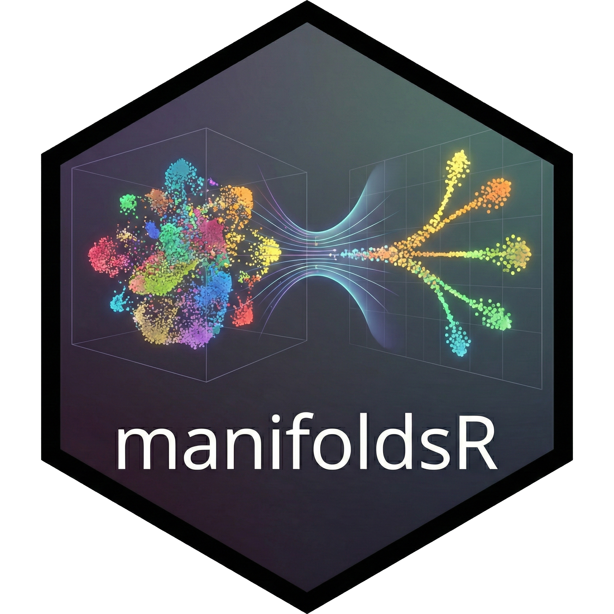

Rust-accelerated manifold learning methods with R bindings. For the modern-day single-cell Pollock. Additionally, provides some clustering methods with focus on EVoC (and k-means clustering for comparison purposes).
Overview
2D embedding methods
manifoldsR provides high-performance implementations of popular dimensionality reduction techniques:
- UMAP (Uniform Manifold Approximation and Projection with various optimisers which makes this fast.)
- t-SNE (t-Distributed Stochastic Neighbor Embedding - Barnes-Hut and FFT-accelerated Interpolation-based versions)
- PHATE (Potential of Heat-diffusion for Affinity-based Trajectory Embedding)
- PaCMAP (Pairwise Controlled Manifold Approximation)
- Diffusion map (A classical method of Manifold learning)
- Density-preserving versions of UMAP and tSNE
The core algorithms are implemented purely in Rust without any kernel switching for speed while providing user-friendly R interfaces. The optimisations here make them in parts substantially faster than other libraries typically used in the R ecosystem to run these methods. The backbone here are the Rust crates that enable approximate nearest neighbour searches and the underlying manifold learning methods. The underlying philosophy is to strip out most additional features and focus on the core mechanics and make them as fast as possible, avoid abstraction layers and indirection wherever possible and let llvm do its magic to generate fast code.
Clustering methods
Additionally, you might want to cluster your data and then visualise it. For this use case, the package also provides the following clustering methods (and of course various metrics around clusters)
- k-means clustering (mini Batch version and full version with Hamerley’s algorithm)
- EVõC (Embedding Vector Oriented Clustering ported from Python into Rust and exposed here - from Leland McInnes at the Tutte institute).
Installation
Prerequisites
This package requires Rust to be installed on your system. If you don’t have Rust installed:
macOS and Linux:
Windows:
Download and run the installer from rustup.rs
After installation, restart your terminal and verify Rust is installed:
How to use the package … ?
Please check out the website and associated vignettes. Changelog can be found here.
Roadmap
For now the package covers the most common embedding versions. Future features are likely to include:
License
Copyright (c) 2026 manifoldsR authors
Permission is hereby granted, free of charge, to any person obtaining a copy of this software and associated documentation files (the “Software”), to deal in the Software without restriction, including without limitation the rights to use, copy, modify, merge, publish, distribute, sublicense, and/or sell copies of the Software, and to permit persons to whom the Software is furnished to do so, subject to the following conditions:
The above copyright notice and this permission notice shall be included in all copies or substantial portions of the Software.
THE SOFTWARE IS PROVIDED “AS IS”, WITHOUT WARRANTY OF ANY KIND, EXPRESS OR IMPLIED, INCLUDING BUT NOT LIMITED TO THE WARRANTIES OF MERCHANTABILITY, FITNESS FOR A PARTICULAR PURPOSE AND NONINFRINGEMENT. IN NO EVENT SHALL THE AUTHORS OR COPYRIGHT HOLDERS BE LIABLE FOR ANY CLAIM, DAMAGES OR OTHER LIABILITY, WHETHER IN AN ACTION OF CONTRACT, TORT OR OTHERWISE, ARISING FROM, OUT OF OR IN CONNECTION WITH THE SOFTWARE OR THE USE OR OTHER DEALINGS IN THE SOFTWARE.